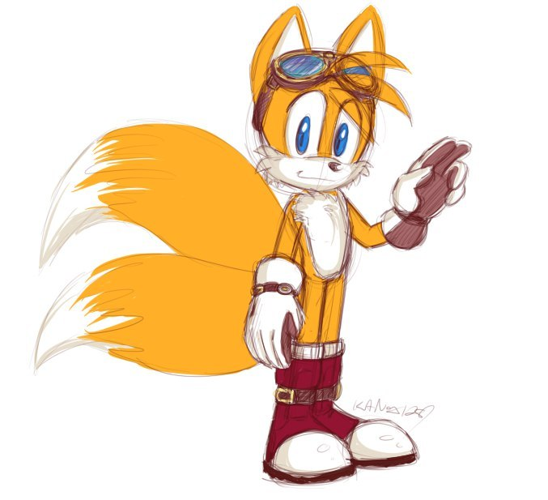

Майлз «Тейлз» Прауэр (англ. Miles «Tails» Prower, яп. マイルス・パウア ー Mairusu Pauā, лит. Miles Pouer) более известный
под своим прозвищем, Тейлз (англ. Tails, яп. テイルス — Teirusu) — персонаж из серии игр «Sonic the Hedgehog». Он —
антропоморфный лисёнок, родившийся с генетическим отклонением, которое дало ему два хвоста, отсюда его прозвище.
Из-за своей ненормальности Тейлз стал жертвой издевательств в детстве. Однажды, он встретил ежа Соника и был
вдохновлён стать таким же как он, увидев, как он быстро бегает, словно ветер. Вскоре после этого, лисёнок начал
следовать за синим ежом в его приключениях и с тех пор стал его лучшим другом и помощником. Он может
использовать свои двойные хвосты, чтобы летать, вращая их, как вертолетный пропеллер, а также Тейлз является
механическим гением и воздушным пилотом.
Вид: Лис
Пол: Мужской
Возраст: 8 лет
